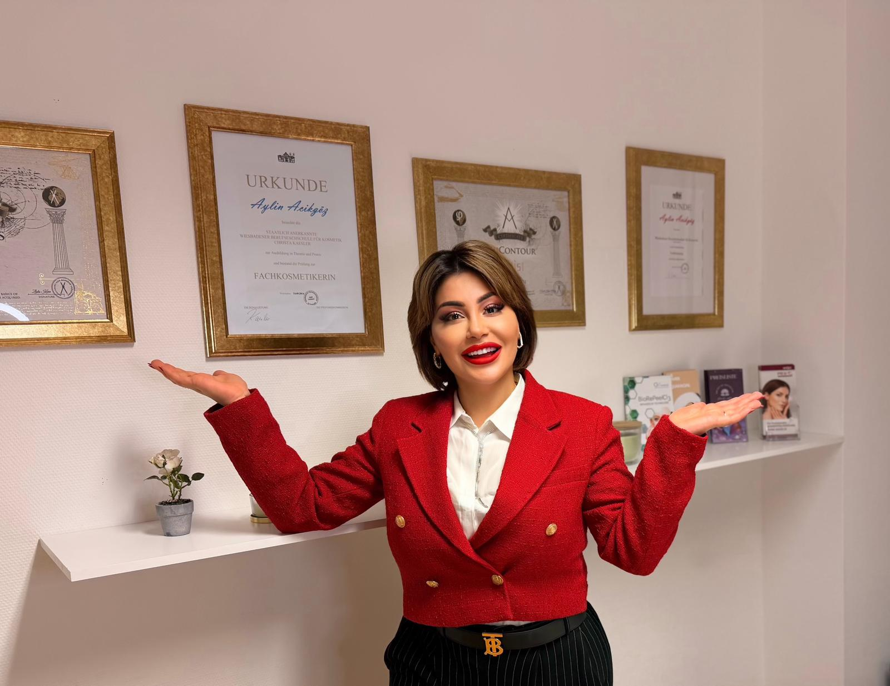

73 Fünf-Sterne-Bewertungen
Kundinnen aus Bruchsal und Umgebung bewerten uns durchgehend mit der Höchstpunktzahl auf Google. Lies nach, warum sie wiederkommen — und weiterempfehlen.
Kosmetikstudio in Bruchsal
Zertifizierte PMU- & Kosmetikexpertise seit über 10 Jahren. Kostenlose Hautanalyse. Antwort innerhalb von 24 Stunden.
Warum Artist of Aesthetic
Kundinnen aus Bruchsal und Umgebung bewerten uns durchgehend mit der Höchstpunktzahl auf Google. Lies nach, warum sie wiederkommen — und weiterempfehlen.
Mehr als 10 Jahre und über 8.000 Behandlungen bedeuten: Wir haben so gut wie jede Haut, jeden Wimpernkranz und jede Augenbrauenform schon gesehen. Kein Ausprobieren an dir — sondern Erfahrung, die man sieht.
Ausgebildet an der staatlich anerkannten Wiesbadener Berufsfachschule für Kosmetik, PhiContour- und Catwalk-Makeup-Artist-zertifiziert. Bei Permanent Make-up und Wimpern vertraust du keiner Anlernkraft, sondern geprüfter Fachausbildung.
Du bekommst innerhalb eines Tages eine Rückmeldung, kein tagelanges Warten auf einen Termin. Die erste Hautanalyse und Beratung dazu ist kostenlos, bevor du dich für irgendetwas entscheidest.
Rezensionen
Sehr zuverlässig und kompetent. Man merkt, dass Aylin weiß was sie tut. Sie versteht ihr Handwerk und bringt dazu auch maximale Sympathie mit. Über die Terminvereinbarung bis hin zu Empfehlungen nach der Behandlung läuft alles reibungslos.
Ich habe ein Wimpernlifting machen lassen und bin super zufrieden mit dem Ergebnis. Die Behandlung war sehr angenehm und wurde professionell durchgeführt. Man merkt sofort, dass hier mit viel Erfahrung und Sorgfalt gearbeitet wird.
Vielen Dank an Aylin für ihre hervorragende Arbeit an meinen Augenbrauen. Sie hat sie sehr schön gemacht. Ihre Professionalität und Herzlichkeit haben mich sehr überzeugt. Ich bin sehr zufrieden.
Unverbindlich anfragen
Du musst dich nicht vorab festlegen. Schreib kurz, worum es geht – wir melden uns innerhalb von 24 Stunden mit einem konkreten Terminvorschlag und sagen dir ehrlich, welche Behandlung passt.
Leistungsbereiche

Care
Unreine Haut, große Poren, erste Fältchen oder einfach ein fahler Teint — jede Haut hat ein anderes Problem, und Standardbehandlungen lösen es selten. In unserem Studio in Bruchsal analysieren wir deinen Hauttyp zuerst und wählen dann gezielt zwischen Mikroneedling, Aquafacial, Peelings oder Goldmaske. So bekommst du eine Behandlung, die auf dein Hautbild abgestimmt ist — nicht eine, die zufällig gerade im Angebot ist.
Mehr erfahren
Style
Ob spontaner Termin für den Abend, Braut-Make-up fürs Ja-Wort oder einfach nur saubere, gepflegte Augenbrauen im Alltag — die Anlässe sind unterschiedlich, der Anspruch bleibt gleich hoch. Kundinnen aus Bruchsal, Forst und Ubstadt-Weiher kommen zu uns, weil das Ergebnis auch nach Stunden noch hält, ob auf Fotos oder in echt. Vom Probe-Make-up bis zur Fadentechnik-Enthaarung planen wir den Termin so, dass du entspannt rauskommst statt gehetzt.
Mehr erfahren
Volume
Wimpern, die nach zwei Wochen schon lückenhaft aussehen oder komplett unnatürlich wirken, sind meist ein Zeichen für falsche Technik oder minderwertiges Material. Wir arbeiten mit Classic-, Light- und Mega-Volume-Techniken und passen Länge sowie Dichte an deine natürlichen Wimpern an — kein Schema F. Weil die Nachfrage in Bruchsal hoch ist, planen wir Refill-Termine fest mit ein, damit du nicht wochenlang auf einen Auffülltermin warten musst.
Mehr erfahren
Contour
Verwaschene Augenbrauen jeden Morgen neu zeichnen, verblasste Lippenkontur, asymmetrische Brauen von einer früheren Behandlung — Permanent Make-up soll das dauerhaft lösen, nicht neue Probleme schaffen. Als PhiContour-zertifiziertes Studio setzen wir bei Lippen-PMU, Microblading und Ombré Brows auf Pigmente und Nadeltechniken, die natürlich verheilen statt bläulich nachzudunkeln. Vor jeder Behandlung besprechen wir Form und Farbe gemeinsam mit dir, damit das Ergebnis zu deinem Gesicht passt — nicht zu einem Vorher-Foto von jemand anderem.
Mehr erfahrenGefragteste Behandlungen
Jede Behandlung beginnt mit der kostenlosen Analyse – erst danach steht fest, was wirklich passt.
Feine Linien, große Poren und ungleichmäßige Hautstruktur lassen sich mit Cremes allein kaum beeinflussen — Mikroneedling regt gezielt die körpereigene Kollagenbildung an, wo es wirklich etwas verändert. Die Nadeltiefe und Wirkstoffkombination passen wir an dein Hautbild an, statt eine Standardeinstellung zu fahren. Die Behandlung dauert rund 45–60 Minuten, eine leichte Rötung danach ist normal und meist am nächsten Tag abgeklungen.
Mehr erfahrenWenn deine Haut fahl, dehydriert oder verstopft wirkt, reinigt, peelt und durchfeuchtet die Aquafacial-Behandlung in einem Schritt — ganz ohne die Ausfallzeit eines klassischen Peelings. Die Kombination aus Vakuum-Reinigung und Wirkstoff-Infusion macht sie auch für empfindliche Haut gut verträglich. Du siehst den Unterschied direkt nach der Behandlung, nicht erst nach Tagen Abheilzeit.
Mehr erfahrenAm Hochzeitstag zählt jedes Detail, und Make-up, das um 14 Uhr anders aussieht als um 20 Uhr, ist das letzte Risiko, das du eingehen willst. Deshalb ist bei uns ein Probemake-up im Vorfeld immer inklusive — nicht optional, nicht extra verhandelbar. Wir testen dabei Foto- und Langzeit-Tauglichkeit, nicht nur den ersten Eindruck im Spiegel.
Mehr erfahrenFalsch gezupfte oder zu dünn geformte Augenbrauen wachsen oft monatelang ungleichmäßig nach — die richtige Form von Anfang an spart dir diese Wartezeit. Wir arbeiten je nach Hauttyp und Wunsch mit Fadentechnik oder Wax und richten die Form an deiner individuellen Gesichtsform aus, nicht an einem aktuellen Trend. Die Behandlung dauert meist nur 15–20 Minuten.
Mehr erfahrenWenn dir Classic-Wimpern zu dezent, Mega Volume aber zu extrem ist, liegt Light Volume genau dazwischen — mehr Fülle, ohne unnatürlich zu wirken. Wir setzen 2–5 hauchdünne Wimpern pro Naturwimper und achten dabei genau auf das Gewicht, damit deine eigenen Wimpern nicht darunter leiden. Die Erstbehandlung dauert etwa 2–2,5 Stunden.
Mehr erfahrenWenn du keine Extensions willst, aber deine Naturwimpern trotzdem länger und wacher wirken sollen, ist Lifting inklusive Färben die schnellere und pflegeleichtere Alternative. Die Behandlung schwingt deine eigenen Wimpern von der Wurzel auf und hebt sie sichtbar an. In rund 60 Minuten ist die Behandlung abgeschlossen und hält üblicherweise 6–8 Wochen.
Mehr erfahrenBlasse, asymmetrische oder mit den Jahren verblassende Lippenkontur lässt sich mit Lippenstift täglich neu kaschieren — oder einmal dauerhaft korrigieren. Wir arbeiten mit PhiContour-zertifizierter Technik und pigmentieren in einem Ton, der zu deinem natürlichen Hautunterton passt. Die Abheilzeit beträgt etwa 5–7 Tage, der Auffrischungstermin nach 4–6 Wochen ist eingeplant.
Mehr erfahrenZu dünne, ungleichmäßige oder lückenhafte Augenbrauen kosten dich morgens Zeit vor dem Spiegel — Microblading zieht einzelne, haarfeine Striche, die wie echte Brauenhärchen aussehen. Als PhiBrows-zertifiziertes Studio zeichnen wir die Form vor dem Stechen exakt nach deiner Gesichtsanatomie vor, damit du vorab mitentscheidest. Die Behandlung dauert etwa 2 Stunden, die Abheilung rund 7–10 Tage.
Mehr erfahrenEinzugsgebiet
Das Studio liegt in der Schwimmbadstraße in Bruchsal. Ein großer Teil der Kundinnen fährt aus dem Umland an – aus Karlsdorf-Neuthard, Forst, Hambrücken oder Ubstadt-Weiher sind es zehn bis zwanzig Minuten. Parkplätze sind in der Innenstadt knapp: Sag bei der Terminbestätigung kurz Bescheid, dann nennen wir dir die nächstgelegene Möglichkeit.

Nachweise im Studio einsehbar
Wer behandelt
Artist of Aesthetic ist ein lokal geführtes Kosmetikstudio in Bruchsal — kein Filialbetrieb, sondern feste Ansprechpartnerin für jede Behandlung. Ausgebildet an der staatlich anerkannten Wiesbadener Berufsfachschule für Kosmetik und zertifiziert in PhiContour sowie als Catwalk Makeup Artist, stehen hinter jeder Behandlung über 10 Jahre Erfahrung und mehr als 8.000 durchgeführte Termine. Gearbeitet wird ausschließlich mit hochwertigen, dermatologisch getesteten Materialien und anerkannten Methoden — nicht mit dem gerade günstigsten Zubehör. Du bekommst eine ehrliche Einschätzung vor jeder Behandlung, auch wenn das bedeutet, dir von etwas abzuraten.
Mehr über das StudioVor dem Anruf
Deine Frage ist nicht dabei? Schreib kurz per WhatsApp – Antwort in der Regel am selben Tag.
Frage per WhatsApp stellenDas hängt von Technik, Umfang und deinem individuellen Ausgangszustand ab — deshalb nennen wir dir vorab einen klaren Preis, keinen vagen „ab“-Preis, der später steigt. Die vollständige Preisliste findest du auf der jeweiligen Leistungsseite. Bei Unsicherheit klärt die kostenlose Erstberatung, welche Behandlung überhaupt sinnvoll ist, bevor über Preise gesprochen wird.
Ja, ohne Wenn und Aber. Du bekommst eine ehrliche Einschätzung deines Hauttyps und einen Behandlungsvorschlag, auch wenn du dich am Ende gegen eine Behandlung bei uns entscheidest.
Auf Anfragen antworten wir innerhalb von 24 Stunden mit einem konkreten Terminvorschlag. Wie schnell der Termin selbst stattfinden kann, hängt von der gewünschten Behandlung ab — bei Wimpern-Refills und PMU-Auffrischungen empfehlen wir, rechtzeitig zu buchen, da die Nachfrage in Bruchsal entsprechend hoch ist.
Wir arbeiten nach medizinischen Hygiene- und Sterilisationsstandards, mit Einmalmaterial dort, wo es vorgeschrieben ist, und geschultem Umgang mit Nadeln und Pigmenten. Das ist bei uns Standard bei jeder Behandlung, nicht nur bei sichtbar „medizinischen“ Leistungen.
Deshalb besprechen wir Form und Farbe vor der Behandlung ausführlich und zeichnen bei PMU die Form vorab zum gemeinsamen Abstimmen vor, statt direkt zu stechen. Sollte nach der Abheilung eine Korrektur nötig sein, ist dafür der Auffrischungstermin nach 4–6 Wochen fest eingeplant.
Ja — zum Beispiel solltest du vor Lippen-PMU auf akute Herpes-Vorgeschichte hinweisen und vor Wimpernverlängerungen auf Kontaktlinsen oder Augenreizungen. Die genauen Vorbereitungshinweise für deine Behandlung besprechen wir bei der Terminbestätigung, damit am Tag selbst nichts dazwischenkommt.
Bruchsal · Karlsdorf-Neuthard · Forst · Hambrücken · Ubstadt-Weiher · Spöck · Büchenau · Untergrombach · Obergrombach · Heidelsheim
Termin sichern
Antwort innerhalb von 24 Stunden, unverbindlich und ohne versteckte Kosten.
Schwimmbadstraße 14 · 76646 Bruchsal · Termine nach Vereinbarung